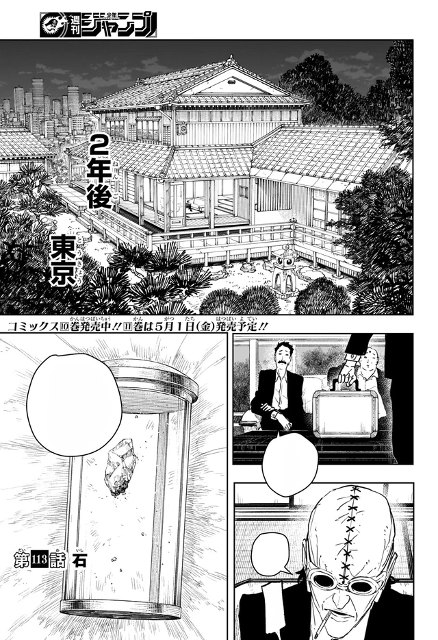

A modern Japan that had to admit sorcery in public, then lie about what it did with it. Civilian sorcerers handle small jobs. The Kamunabi exist because some jobs are national. Enchanted Blades are the rare version of Datenseki that overflow as weather instead of craters. The war over a vein on Irishima is the water the present-day plot has been swimming in since page one. The first moral geometry is still a house: the Rokuhira workshop, a cellar that would not break, a bowl on the table.
After the treaty, Akemura used Magatsumi anyway. About 200,000 civilians. The Kamunabi filed it as victory, hid the Sword Master, and called the bearers heroes. Kunishige confiscated the six swords and disappeared. The cover-up is not a twist. It is the setting.

Chapter 113: the island that starts the clock. Full chapter: VIZ / MANGA Plus.
Mikaboshi exile
The Soga were mainland prophecy aristocracy. They pushed the old sorcerer kings, the Mikaboshi, off the mainland. The Mikaboshi survived under the sea with bodies that could live with Datenseki. Chiaki’s foresight is the Soga clan’s warrant; the island that later rises is the old kings coming back for the ore. See Soga and Mikaboshi.
Shokoku appears
An island rises from the sea. Irishima’s earthquake had already shown a Datenseki vein; Japan harvests it. The Mikaboshi return with those adapted bodies. The Sorcery Bureau becomes an army. Shiba is still a Soga guardian. Kunishige is still a picky weapons dealer who has not yet looked at the ore. The talks on Irishima are Part 2’s opening property.
Blades enter at +1 year 5 months
The Kamunabi form from the Counter-Sorcery Army. For two years Datenseki research goes nowhere. Shiba believes Kunishige’s eyes are the only way to make the mineral usable. He is right. Six Enchanted Blades enter at one year and five months and reverse the front. After the blades arrive, Shokoku overthrows its royals and signs a peace. Akemura voids it with flowers: Malediction, ~200,000 civilians, a cover-up instead of a trial. Kunishige confiscates the six swords, hides with Azami and Shiba, and raises Chihiro over a cellar he cannot smash.
Enten
Every attempt to destroy the wartime blades fails. Kunishige and Chihiro forge the seventh: Enten, built as a counter rather than a weapon of state. Its True Realm is Magatsumi’s death. The goldfish are the household made into a fighting language.
Hishaku form
Ten criminal sorcerers, flame tattoos, a shared fire-gate. One plan for Shinuchi. Yura is the mind: not the loudest killer in the set of ten, the one who decides which blade goes to which monster. They will need a leak inside the Kamunabi and a customer for Cloud Gouger.
The raid
Three Hishaku sorcerers hit the Rokuhira house. Kunishige is killed in front of Chihiro. The six wartime blades are stolen. Enten stays with the son. Hokuto murders Ibuki Misaka so Cloud Gouger’s contract opens. The remaining bearers are locked in Sanso fortresses. The Kamunabi later learn a director leaked the address. Chihiro and Shiba go into the Tokyo underworld.
Main story
Yura sells Cloud Gouger to Sojo. Vs. Sojo teaches the rules: contracts, Datenseki as a bomb, a government squad that is not enough. The 208th Rakuzaichi lists Shinuchi; Hakuri wakes the Storehouse; Chihiro hands Magatsumi to the Kamunabi and keeps Enten by joining them. Sword Bearer Assassination is the long book, Uruha, Samura, Iori, Kasen’s leak, Yura offering Akemura a body. Part 1 ends around chapter 115 (“Swordsmith”). Part 2 returns to Irishima: Chiaki, the talks, the ore, Kunishige before he was a hermit.